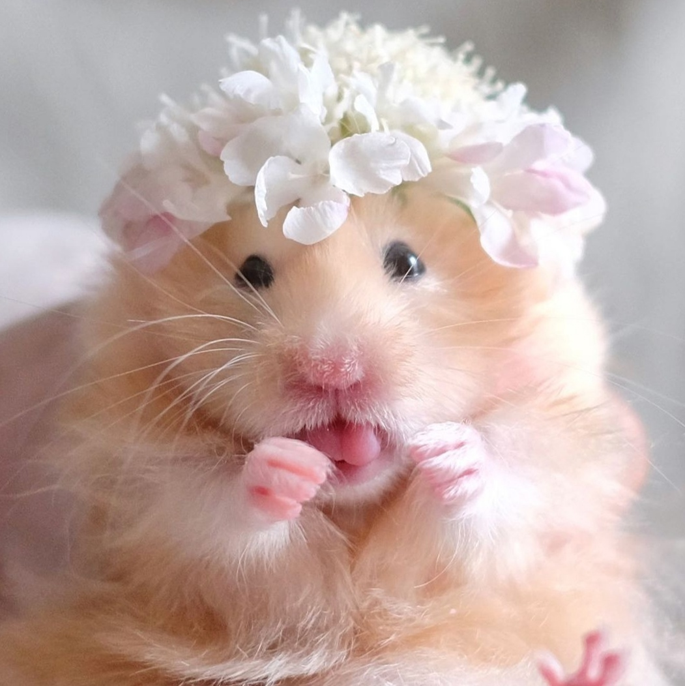

Хомячки – одни из самых популярных домашних животных. И это неудивительно – они маленькие, нетребовательные к уходу, простые в содержании. Тем, кто только собирается завести такого питомца, стоит узнать все о хомяках – об их разновидностях, образе жизни, питании и размножении. |
|
|---|---|
Изображение хомяка |
Виды хомяковДля содержания дома рекомендуют шесть пород хомяков. Нельзя селить вместе грызунов разных видов, так как они не смогут мирно уживаться. |
|
|
Важно! При выборе нового члена семьи учитывайте особенности каждой породы, ведь питомец проживет с вами не один год. |
|